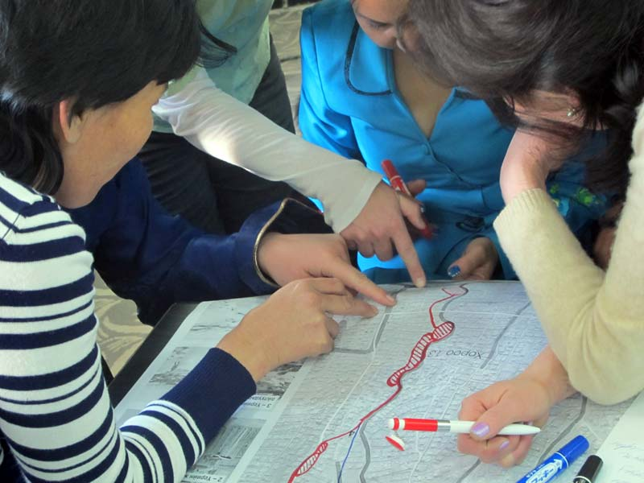

Manaikhoroo Participatory Mapping of the Ger Areas
Ulaanbaatar, Mongolia
Rapid rates of urbanization are causing the concentration of more than half of Ulaanbaatar’s residents (a quarter of Mongolia’s total population) in ger districts, sprawling hillside neighborhoods comprised mainly of traditional tents, or gers. Kota Kita trained and supported the municipal government, together with The Asia Foundation and local leaders and activists, to conduct a community mapping initiative and to provide planning tools so that residents and city government could better understand the context and needs of these marginalized communities and allocate resources accordingly.
Portable Mongolian yurts, or gers, have been homes to generations of nomadic Mongolians. Though they were never meant for permanent urban housing, they are now being used as such by the many new immigrants to Ulaanbaatar. Mongolians have flocked to the capital from the steppes in droves, partly in response to the recent severe winters in which herders faced devastating losses. The extreme climate of Mongolia, combined with the low-density ad-hoc settlement of the ger districts, means that the government has had difficulty delivering services such as water, waste management, electricity, and other basic needs to these communities.
As Ulaanbaatar prepares for continued rapid growth, the government needs reliable data and accurate and up-to-date maps of these expanding urban areas and the services available within them. Our Kota Kita team worked together with the City Municipality of Ulaanbaatar and The Asia Foundation to carry out a community mapping initiative that covered 87 neighborhoods, comprising over 800,000 people—around 70% of the city’s entire population. Two delegations of Mongolian government officials were brought to Solo, Indonesia, to meet the Mayor and learn firsthand about the successful community mapping previously undertaken by Kota Kita in the city.
The completed maps measure the availability and accessibility of neighborhood services in six sectors: water, health, education, public transport, solid waste management, and vulnerability and safety. The data were used in the 2014 budgetary discussions, the first time that spatial analysis played a key role in such planning.
Our team also helped the City Municipality of Ulaanbaatar and The Asia Foundation to launch an online community website and interactive platform, www.manaikhoroo.mn, where both citizens and government officials can access the completed maps and display indicators with information on available services organized by khoroo, or neighborhood. Such visual and data-based evidence now serves as a reference for all stakeholders, helping the government and citizen advocates better understand the context and needs of marginalized areas and their public services. The success of the project speaks to the scalability of our methodology and its applicability to a variety of urban and national contexts.
